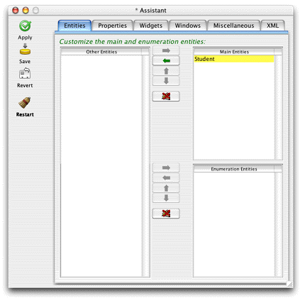
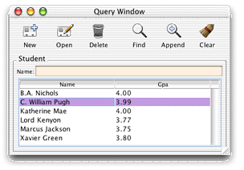
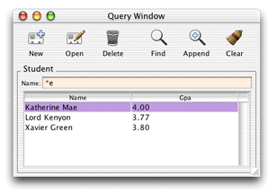
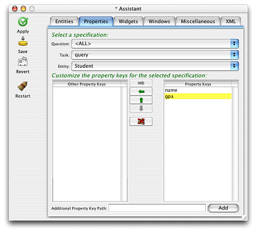
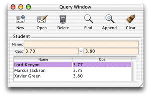
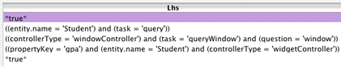
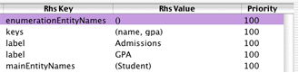

There are many ways to customize Direct to Java Client applications, including a tool called Assistant. Assistant is a Java application included in every Direct to Java Client application, and it provides an easy way to perform simple customizations. The following steps introduce you to Assistant:
Figure 3-19 Change entity type
Figure 3-20 Query window with data
Figure 3-21 Query window searching for names containing "e"
gpa attribute.
In Assistant, switch to the Properties pane, and select "query"
in the Task pop-up menu. You'll notice that the "gpa" property
key is listed in the Other Property Keys list. As shown in Figure 3-22, move
it to the Property Keys list, save, and restart the application.
You can now query on the gpa field
also, as illustrated in Figure 3-23. By default, the application provides two fields
so you can search for a range of GPAs.Figure 3-22 Properties tab in Assistant
Figure 3-23 Query on GPA
gpa field.
It should be all capitals. In Assistant, switch to the Widgets pane.
Make sure the Property Key pop-up menu reads "gpa." Under Customize
Widget Parameters, change the Label field to "GPA." Save and
restart the application. Notice how the widget label changed.The changes you made in Assistant are stored in the project's user.d2wmodel file.
Open this file in Rule Editor to see the rules that were created
when you made changes using Assistant.
Figure 3-24 shows the left-hand side or conditional of each rule that Assistant created as you customized the application. It says "if the application is in this state, fire the rule and resolve the rule's right-hand side."
Figure 3-24 Left-hand side of rules
 Figure 3-25 shows the right-hand side of each rule. The first
rule says that none of the entities in the application are considered
enumeration entities. The second rule says to provide fields in
query windows for both the name and gpa properties
of the Student entity. The third rule says to use the label "Admissions"
for query windows for the Student entity. The fourth rule says to
use the label "GPA" for the property key label for the "gpa" attribute
of the entity "Student." The fifth rules says that the Student
entity is a main entity.
Figure 3-25 Right-hand side of rules
At this point, your application should resemble Figure 3-26.
Figure 3-26 The application with simple customizations
![[image: ../Art/queryonall.gif]](../Art/queryonall.gif)